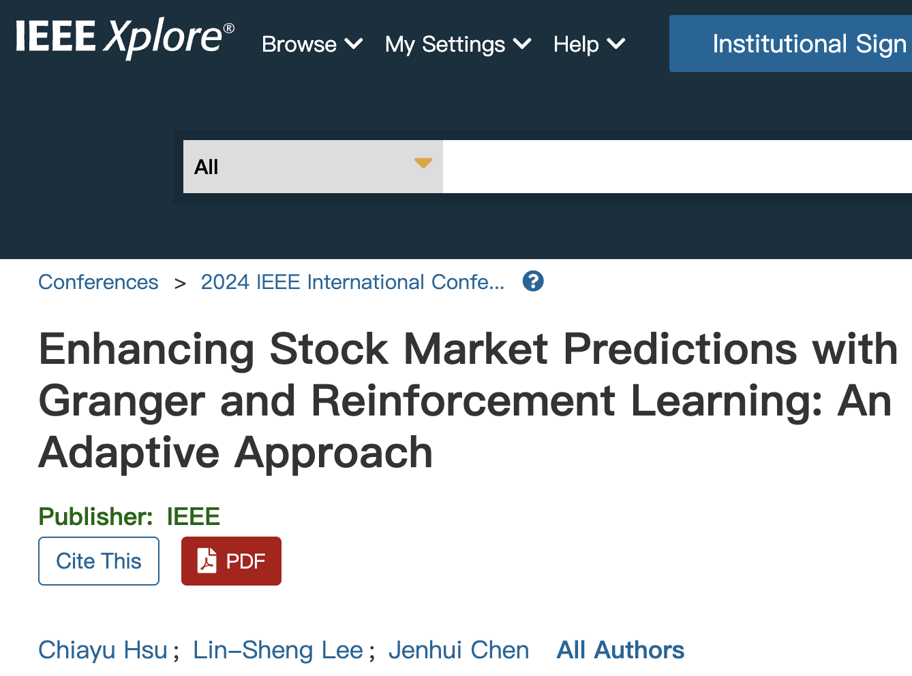
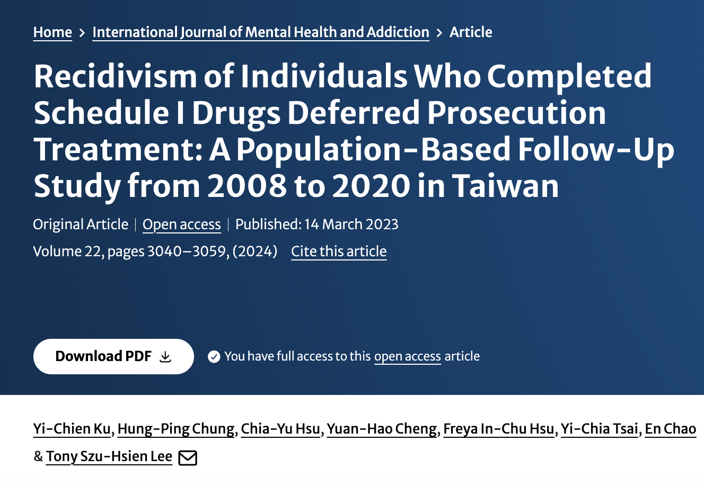

許家毓 (Shirley Hsu)
統計 x 資工 跨領域人才
資料工程 | 機器學習 | 系統設計 | 金融科技
我致力於成為一名以工程實作為核心的軟體工程師，專注於將數據洞察轉化為產品價值，為團隊帶來創新的技術思維與貢獻。
查看我的專案01. 關於我
我剛取得長庚大學資訊工程碩士學位，我的專業背景結合了 Python、SQL 與 C++ 的扎實軟體開發技能，以及對機器學習、統計建模深入理解。
在學術研究與實務工作中，我主導過多項專案，從處理百萬級犯罪研究資料庫，到開發自動化股票交易系統，這些經驗不僅讓我精進了數據工程與後端開發能力，更培養了我跨團隊溝通與解決問題的能力。
02. 教育經驗
2023/02 - 2025/08
資訊工程碩士 長庚大學
- 專攻課程：機器學習、雲端系統、系統效能分析、樣型識別
- 相關技能：熟練 Python 進行數據處理、分析與機器學習模型開發，擅長 SQL 資料庫管理與查詢分析。
2015/09 - 2019/06
統計學學士 淡江大學
- 相關技能：使用 R 語言進行數據分析與Tableau視覺化，在不同領域運用統計分析方法。
03. 工作經歷
2023/07 - 2023/12
研究助理 長庚大學
- Python自動化：開發自動化流程，透過永豐金證券API串接，實現台股即時資料擷取與自動下單。
- 資料處理與分析：熟練運用Pandas、Numpy、Scikit-learn進行高效的資料處理、技術指標嵌入與模型前處理。
- 資料庫與報表系統：建立SQL資料庫與Tableau視覺化報表系統，優化資料管理與分析效率。
- 機器學習與模型優化：運用機器學習模型進行股票預測，並透過參數優化顯著提升預測準確度與報酬率，有效降低模型誤差。
- 發表於IEEE會議論文Conference on Progress in Informatics and Computing （PIC）。
2021/03 - 2023/01
專案研究人員 法務部司法官學院
- 以 SQL 處理犯罪防治研究資料庫 871 萬筆資料，完成清理與特徵整理、建置統計模型，並以存活分析比較不同族群再犯風險。
- 以 Python 建置爬蟲關鍵字／商家資料庫，解析動態頁面與資料清洗，輸出預警清單協助單位提前部署。
- 期刊發表於 SSCI 收錄的International Journal of Mental Health and Addiction，本領域具影響力前25％的期刊。
2020/03 - 2021/03
統計研究員 新北市政府主計處
- 建置公務行政系統之統計資料庫查詢系統，以Tableau製作外網視覺化統計圖表。
- 擔任新北市消費者暨營造工程物價審核員，擔任督導工作並審核物價漲跌原因。
- 擔任行政院人口及住宅普查之審核員，與主責單位聯絡、協調並督導普查員及監督進程。
2019/07 - 2020/03
研究員 CRIF TAIWAN 中華徵信所
- 專案管理：負責管理專案，項目涵蓋專案控管、時程安排及跨部門溝通協調。
- 對外協商：對接海內外客戶，聽取客戶需求，為客戶解決問題並提供附加服務。
- 市場調查：蒐集分析市場情報，研究產業發展情況、評估市場規模、製作統計圖表。
- 產業報告：撰寫量化與質化產業報告，涵蓋私人企業、政府單位及海外知名企業等。
04. 精選專案
金融科技與自動化交易
利用格蘭傑因果分析建構圖神經網路(GNN)與強化學習(RL)提升股市預測
- 專案動機： 股市的變化非常複雜，傳統模型很難抓到股票之間那種「今天 A 漲了，明天 B 可能會跟著漲」的連動關係。本專案旨在結合圖神經網路 (GNN) 與強化學習，以提升股票預測的精準度與自動決策能力。
-
技術實現：
- 資料工程與圖建置： 開發 Python 自動化腳本，每日爬取並清洗台股資料，並利用「格蘭傑因果檢定」動態建構股票之間的影響關係圖（即鄰接矩陣）。
- 模型建置與決策： 運用 PyTorch 訓練圖神經網路 (GNN)，預測隔日股價的漲、跌、或不變的機率。接著，透過強化學習，將模型輸出轉換為「買進/賣出/觀望」的最佳交易決策。
- 自動化交易流程： 成功串接上述流程，建構一套從資料擷取、模型預測到自動下單的完整系統。
-
亮點成就：
- 成功建構一套從數據處理、模型開發到自動化交易的完整系統。
- 本研究成果已獲國際會議 IEEE PIC 接受並發表，驗證了 GNN 在捕捉市場動態關係上的潛力。
Python
PyTorch
GNN
API整合
SQL


大數據處理與分析
百萬級犯罪資料庫處理與再犯風險預測模型
- 專案動機： 台灣的毒品戒癮治療，成效到底好不好？台灣政府推行近二十年的戒癮治療政策，缺乏中長期的量化成效評估，本研究旨在填補此缺口。
-
技術實現：
- 大規模資料處理： 在 871 萬筆 犯罪資料庫中，以 SQL 進行條件篩選、清理、去識別化與特徵工程。
- 統計建模： 應用 Kaplan-Meier 與 Cox 比例風險模型，量化並比較不同群體的再犯風險，為政策提供資料支持。
-
亮點成就：
- 處理近千萬筆級別大型資料庫的能力，從資料前處理、特徵工程到統計建模。
- 成功發表於該領域排名前 25% 的 SSCI 期刊。
SQL
Python
存活分析
網路爬蟲
統計建模
05. 核心技術
程式語言
Python
SQL
C++
R
機器學習
Scikit-learn
PyTorch
TensorFlow
Pandas
Numpy
資料庫
MySQL
PostgreSQL
視覺化
Tableau
開發工具
GitHub
Visual Studio Code
專業認證
CPE 大學程式能力檢定
Python 網頁資料擷取
Excel Microsoft Office Specialist Excel Expert 2019
Excel TQC-OA
Tableau - Tableau Desktop
學術成就
國際會議論文IEEE PIC (Conference on Progress in Informatics and Computing)
SSCI 期刊International Journal of Mental Health and Addiction (領域排名前 25%)
與我聯絡
我的職涯目標是成為一名軟體工程師，並持續深化在軟體開發與系統設計領域的專業能力。我相信我豐富的實務經驗與快速的學習能力，將能為貴公司的專案帶來實質貢獻，並與團隊共同成長。
shirley51429@gmail.com
0988-397-199